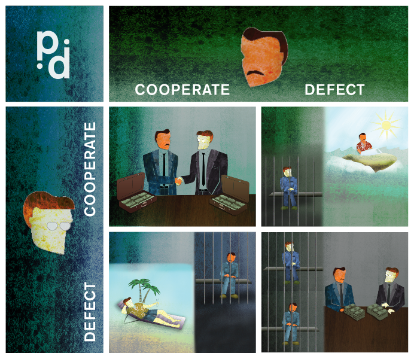

El equilibrio del miedo
¿Qué sucede en un juego en el que todos los jugadores saben cuál es la mejor estrategia de cada uno de ellos?
Hablábamos la semana pasada de las elecciones que hay que hacer teniendo en cuenta cuáles pueden ser las elecciones de los demás, como en el caso del concurso de belleza de Keynes. Estas situaciones pueden considerarse como un juego en el que cada elección es una jugada. Y cuando en estos juegos cada jugador conoce las estrategias de los demás y todos buscan maximizar sus posibilidades de éxito, se tiende a un “equilibrio de Nash”.
El equilibrio de Nash se alcanza cuando la estrategia de cada jugador es la mejor en relación con las estrategias de los demás, por lo que a nadie le conviene cambiar de estrategia si los demás no lo hacen. A mediados del siglo pasado, el matemático estadounidense John Nash demostró que en todo juego en el que los jugadores pueden elegir entre un número finito de estrategias, siempre existirá al menos un equilibrio de este tipo, en el que, en principio, ningún jugador se atreve a cambiar de estrategia en función de lo que piensa que harán los demás; por eso el equilibrio de Nash se conoce también como “equilibrio del miedo”.
En 1994, Nash recibió el Premio Nobel de Economía por sus aportaciones a la teoría de juegos, y la galardonada película Una mente maravillosa se basa en su accidentada vida (sufría frecuentes alucinaciones y se le diagnosticó esquizofrenia paranoide). Su caso también contribuyó a fomentar las especulaciones sobre la relación entre genialidad y locura, y él mismo solía decir que no habría tenido tan buenas ideas si hubiera pensado de una forma “más normal”.
El dilema del prisionero
Un ejemplo de situación que puede desembocar en un equilibrio de Nash es el famoso “dilema del prisionero”. Seguro que muchos ya lo conocen, pero es de obligada mención al hablar del “equilibrio del miedo”, y, por otra parte, no está de más someterlo a debate entre nuestras/os sagaces lectoras/es:
Dos prisioneros, A y B, han cometido un crimen. La policía los ha detenido, pero no tiene pruebas suficientes para mandarlos a la cárcel. Con objeto de hacerlos confesar, los encierran por separado y a cada uno le plantean lo siguiente:
Si tú confiesas y tu compañero no lo hace, a ti te dejaremos en libertad y a él le caerán diez años de cárcel.
Si confesáis ambos, os caerán cinco años de cárcel a cada uno.
Si no confesáis ninguno de los dos, os caerá un año de cárcel a cada uno.
¿Cuál sería en este caso el equilibrio de Nash? ¿Qué harías si fueras uno de los dos prisioneros?
Carlo Frabetti es escritor y matemático, miembro de la Academia de Ciencias de Nueva York. Ha publicado más de 50 obras de divulgación científica para adultos, niños y jóvenes, entre ellos Maldita física, Malditas matemáticas o El gran juego. Fue guionista de La bola de cristal.